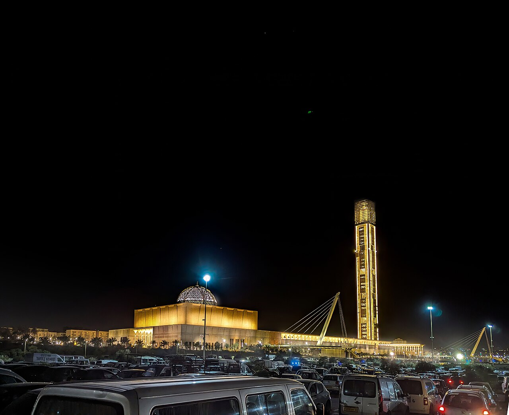

2014 – 2019Algiers
École Nationale Supérieure d'Informatique
Engineering degree and M.S. in Computer Systems. External collaborator with MIT CSAIL on the Tiramisu compiler; internships at CERIST, Sonelgaz, and Graphic Era University (India).